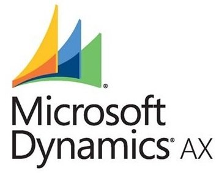

НПП «Томская электронная компания» и «Утилекс АйТи» подводят итоги первого этапа внедрения ERP-системы
Научно-производственное предприятие «Томская Электронная Компания» и Компания «Утилекс АйТи», российский поставщик услуг в области ИТ и консалтинга, завершили первый этап внедрения системы управления предприятием на базе Microsoft Dynamics AX.
В результате первого этапа внедрения решена задача автоматизации процессов учета и планирования материальных ресурсов компании для разработки новых продуктов, серийной продукции и проектной деятельности. За счет регистрации в системе отделом маркетинга клиентских заявок, формирования коммерческих предложений и ведения клиентской базы, а отделом материально-технического снабжения заказов поставщикам, повысилась эффективность планирования ресурсов. Производственно-диспетчерский отдел получил инструмент для оперативного расчета потребностей в полуфабрикатах на основании заказов на продукцию и автоматического создания производственных заказов.
В ходе проекта специалисты «Утилекс АйТи» реализовали ряд модификаций для упрощения и оптимизации работы сотрудников НПП «ТЭК». Был разработан механизм составления отчетов, позволяющих осуществлять контроль деятельности подразделений компании: автоматическое формирование журналов комплектации под производственные заказы, формирование платежей поставщикам на основании счетов, расчет плановых калькуляций и т.д. Для снижения количества ошибок в результате многократного ввода данных, система Microsoft Dynamics AX интегрирована с системами электронного документооборота DocsVision и «Банк-Клиент», частично с системой бухгалтерского учета «1С». ERP-система стала дополнительным катализатором для оптимизации существующих бизнес-процессов и решения ряда организационных вопросов на предприятии.
В настоящий момент, подразделения компании, включенные в границы проекта, работают в едином информационном пространстве: используют единые справочники поставщиков и клиентов, работают с единым реестром производственных заказов. Внедрение ERP-системы послужило толчком для создания единой системы нормативно-справочной информации в компании, и сейчас ведется работа в этом направлении.
Михаил Семенов, руководитель проекта со стороны НПП «ТЭК», делится: «Специалисты компании, не охваченные проектом, увидели значительные отличия возможностей новой системы от существующих. В связи с этим рамки проекта расширились за счет активного включения подразделений, чья работа напрямую связана с производством, а также проектных отделов и сервисной службы. В итоге во внедрении была задействована большая группа сотрудников нашей компании, что послужило увеличению числа ключевых пользователей системы. Качество управления операционной деятельностью и информационное взаимодействие между подразделениями заметно улучшилось после первого этапа внедрения и следующий шаг — продолжить автоматизацию управления проектами в ERP-системе, поскольку на сегодняшний день для этого используются другие программные продукты Microsoft».
Елена Кошкарова, руководитель проекта со стороны компании «Утилекс АйТи», комментирует: «Microsoft Dynamics AX с одной стороны — платформа, предоставляющая дополнительные возможности дальнейшего расширения и реализации особенностей производства компании. С другой стороны, в ней собраны лучшие мировые бизнес-практики, помогающие оперативно принимать обоснованные управленческие решения. Именно эти факторы обусловили выбор томского предприятия и позволили выполнить поставленные на первом этапе внедрения задачи и заложить фундамент для последующих этапов».